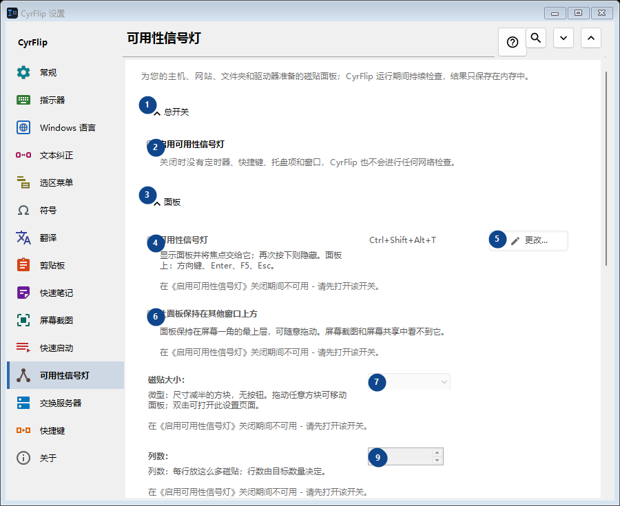
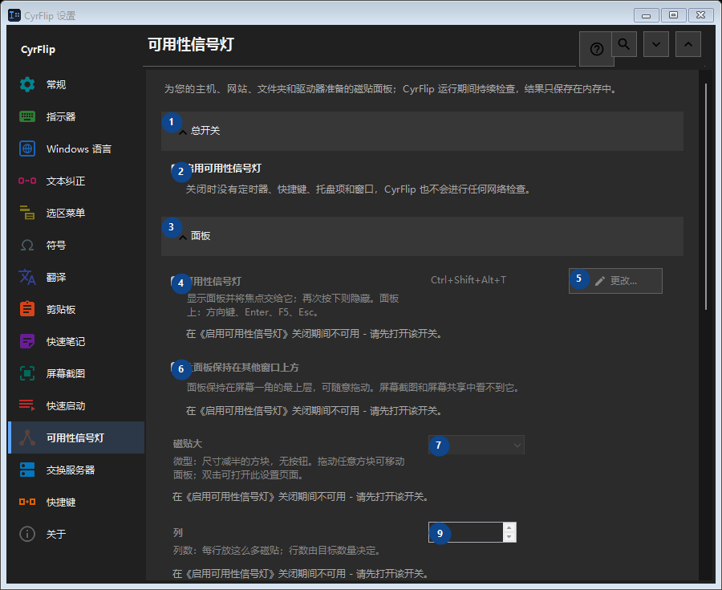

可用性信号灯
用途
为您的主机、网站、文件夹和驱动器准备的磁贴面板；CyrFlip 运行期间持续检查，结果只保存在内存中。


使用顺序
设置立即生效，无须按固定顺序操作；请使用以下分组。
界面元素
1. 总开关
需要执行上述操作时使用此命令。接受前请阅读确认提示。
你的快捷键2. 启用可用性信号灯
关闭时没有定时器、快捷键、托盘项和窗口，CyrFlip 也不会进行任何网络检查。
你的快捷键3. 面板
需要执行上述操作时使用此命令。接受前请阅读确认提示。
你的快捷键4. 可用性信号灯
在《启用可用性信号灯》关闭期间不可用 - 请先打开该开关。 此控件当前不可用。请先启用相应功能或选择条目。
你的快捷键5. 更改 - 可用性信号灯
在《启用可用性信号灯》关闭期间不可用 - 请先打开该开关。 此控件当前不可用。请先启用相应功能或选择条目。
你的快捷键6. 让面板保持在其他窗口上方
在《启用可用性信号灯》关闭期间不可用 - 请先打开该开关。 此控件当前不可用。请先启用相应功能或选择条目。
你的快捷键7. 磁贴大小：
在《启用可用性信号灯》关闭期间不可用 - 请先打开该开关。 此控件当前不可用。请先启用相应功能或选择条目。
你的快捷键8. 列数：
在《启用可用性信号灯》关闭期间不可用 - 请先打开该开关。 此控件当前不可用。请先启用相应功能或选择条目。
你的快捷键9. 在《启用可用性信号灯》关闭期间不可用 - 请先打开该开关。
选择或输入旁边标签所指的值。继续前请检查。 此控件当前不可用。请先启用相应功能或选择条目。
你的快捷键10. 面板窗口透明度：
在《启用可用性信号灯》关闭期间不可用 - 请先打开该开关。 此控件当前不可用。请先启用相应功能或选择条目。
你的快捷键11. 显示面板
在《启用可用性信号灯》关闭期间不可用 - 请先打开该开关。 此控件当前不可用。请先启用相应功能或选择条目。
你的快捷键12. 目标
需要执行上述操作时使用此命令。接受前请阅读确认提示。
你的快捷键13. 地址
在《启用可用性信号灯》关闭期间不可用 - 请先打开该开关。 此控件当前不可用。请先启用相应功能或选择条目。
你的快捷键14. 添加
在《启用可用性信号灯》关闭期间不可用 - 请先打开该开关。 此控件当前不可用。请先启用相应功能或选择条目。
你的快捷键15. 详细设置...
在《启用可用性信号灯》关闭期间不可用 - 请先打开该开关。 此控件当前不可用。请先启用相应功能或选择条目。
你的快捷键16. 立即检查全部
在《启用可用性信号灯》关闭期间不可用 - 请先打开该开关。 此控件当前不可用。请先启用相应功能或选择条目。
你的快捷键17. 更改记录
需要执行上述操作时使用此命令。接受前请阅读确认提示。
你的快捷键18. 打开更改记录文件
在《启用可用性信号灯》关闭期间不可用 - 请先打开该开关。 此控件当前不可用。请先启用相应功能或选择条目。
你的快捷键19. 在文件夹中显示
在《启用可用性信号灯》关闭期间不可用 - 请先打开该开关。 此控件当前不可用。请先启用相应功能或选择条目。
你的快捷键20. 清除更改记录...
在《启用可用性信号灯》关闭期间不可用 - 请先打开该开关。 此控件当前不可用。请先启用相应功能或选择条目。
你的快捷键